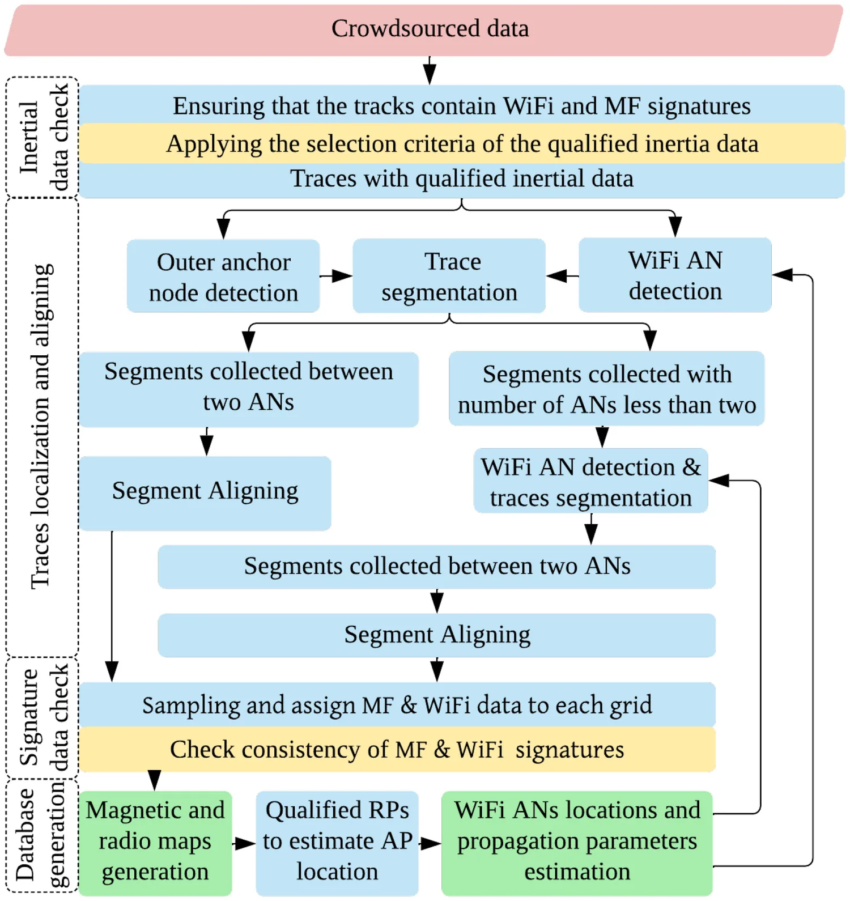
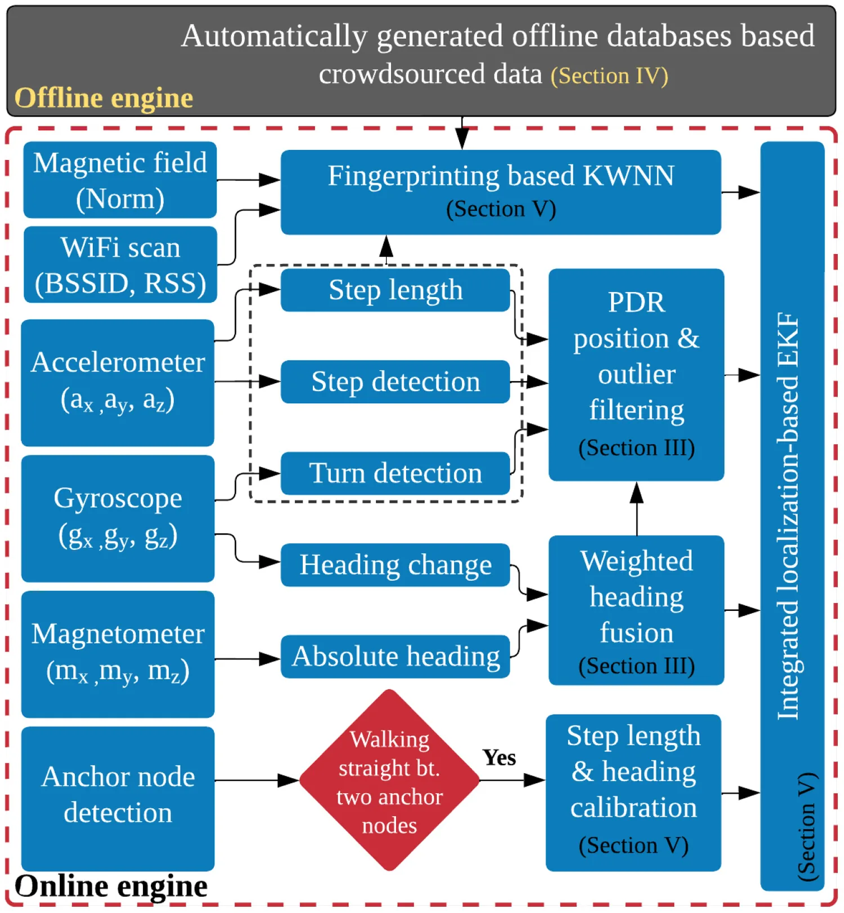
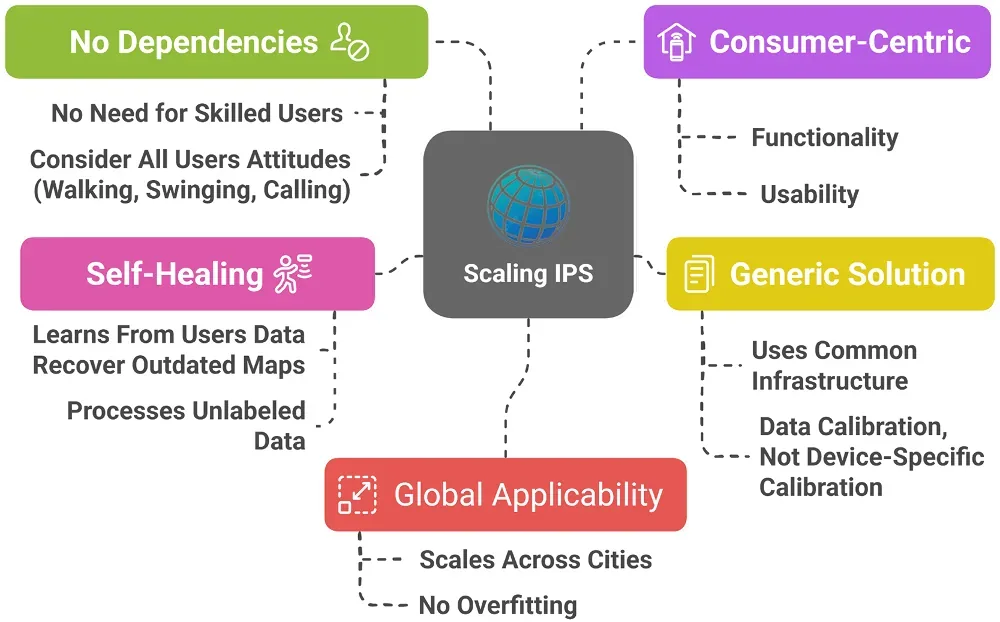
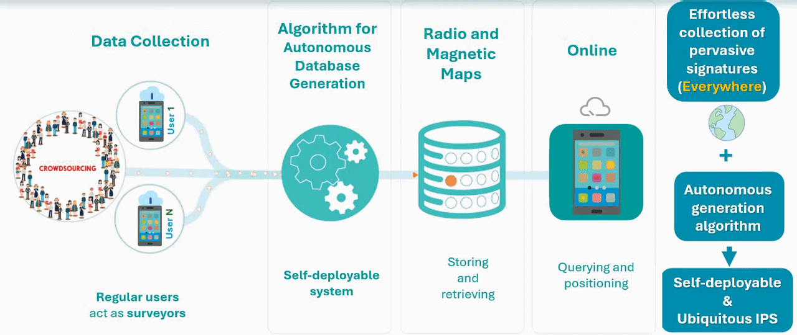

Everywhere: A Framework for Ubiquitous Indoor Localization
Paper preview

Research story and quick reading guide
This paper can be read as the starting point of a deployment story: how can an IPS become available everywhere without asking experts to survey every corridor, room, and floor by hand? Conventional fingerprinting-based IPS depends on an offline radio map, and that map is usually expensive to create. A survey team must walk through the building, collect Wi-Fi or other signal measurements at known reference points, and repeat the work when the environment changes. This model can be accurate in a limited testbed, but it does not scale naturally to large buildings, multi-floor spaces, or long-term operation. Everywhere responds to this bottleneck by shifting the focus from site-surveyed radio maps to pervasive smartphone-based crowdsourced signatures.
The core idea is simple but powerful: smartphones already move with people through indoor spaces, and their sensors continuously observe signal, motion, and environmental patterns. Instead of treating these observations as noisy by-products, the framework treats them as building blocks for a self-deployable IPS. The paper therefore connects three layers that are often studied separately. The first layer is sensing, where user devices provide Wi-Fi fingerprints and motion-related information. The second layer is autonomous localization of these crowdsourced signatures, where the system tries to infer where the collected measurements belong without requiring manual labeling for every point. The third layer is radio-map construction, where localized signatures become part of an indoor positioning infrastructure that can grow over time.
The paper is valuable because it explains why ubiquitous indoor localization is not only an algorithmic problem. It is also an engineering problem of data generation, data qualification, and deployment. A practical crowd-powered system must handle irregular user trajectories, heterogeneous devices, uncertain labels, and incomplete spatial coverage. The framework turns these issues into a pipeline rather than treating them as isolated errors. This makes the paper useful for readers who want to understand how crowdsourcing can move from a concept to an operational IPS mechanism.
For a quick visual interpretation, the paper follows the chain human mobility → smartphone measurements → autonomous signature localization → radio-map growth → ubiquitous IPS. This chain is important because it converts passive daily movement into positioning infrastructure. In that sense, the paper does not merely propose another localization method; it proposes a scalable way of thinking about how indoor positioning data can be produced, organized, and reused.
This work should be cited when discussing scalable IPS, crowdsourced fingerprinting, self-deployable indoor localization, smartphone-based radio-map generation, or the transition from controlled indoor positioning experiments to real deployment. It is especially relevant when authors need a reference for the idea that crowd-powered data accumulation can reduce dependence on labor-intensive site surveys and external calibration sources.
Extended summary
This paper introduces the Everywhere framework for self-deployable indoor localization, using crowdsourced smartphone measurements, inertial data selection, GNSS-aided adjustment, and autonomous fingerprint localization.
Key visual explanation
These selected visuals help readers understand the method quickly before reading the full paper.



When to cite this paper
- ubiquitous indoor localization and self-deployable IPS are discussed
- crowdsourced smartphone data are used to build fingerprinting maps
- GNSS and inertial data support autonomous indoor radio map generation
- scalable IPS frameworks are compared
Keywords
ubiquitous indoor localizationcrowdsourcingWi-Fi fingerprintingGNSS-aided adjustmentinertial sensingradio map generationsmartphone positioning
Official link
https://doi.org/10.1109/JIOT.2022.3222003
For publisher-restricted articles, link to the DOI or an allowed accepted manuscript rather than uploading a restricted PDF.
BibTeX
@article{Mansour2023everywhere,
title = {Everywhere: A Framework for Ubiquitous Indoor Localization},
author = {Ahmed Mansour and Junhua Ye and Yaxin Li and Huan Luo and Jingxian Wang and Duojie Weng and Wu Chen},
year = {2023},
journal = {IEEE Internet of Things Journal},
doi = {10.1109/JIOT.2022.3222003},
}Visual workflow: autonomous radio-map generation

This workflow visual summarizes the paper's deployment logic: ordinary users contribute pervasive signatures, the system generates and stores radio or magnetic maps, and online users query the generated reference for positioning.
Open the related research areaResearch-area connection
This page is connected to the homepage research-area map so readers can move from the individual paper to the broader research program.